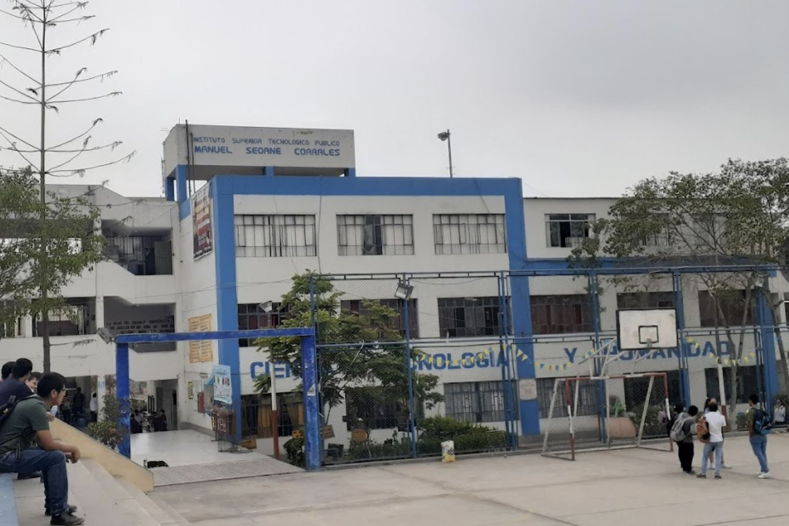

Volver
Volver
IESTP MANUEL SEOANE CORRALES
Instituto público con 7 carreras técnicas profesionales las cuales son:
- Desarrollo de Sistemas de la Información
- Contabilidad
- Electricidad Industrial
- Enfermería Técnica
- Mecánica Automotriz
- Mecánica de Producción
- Química Industrial
